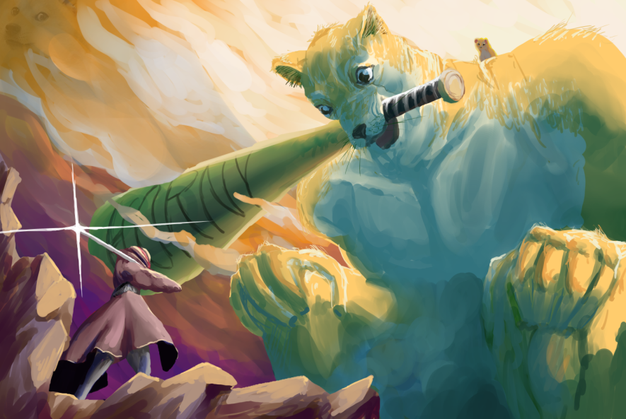

Home
Edge is a fast paced CyberPunk hack and slash action game. You take control of Ed a basemnet dwelling neckbeard with daddy issues. In the the real world Ed may be a loser, but in the internet world he's a super badass CyberEdgeLord. The game primarily takes place in the CyberSpace a parody of todays internet. Ed is on the quest to become the ultimate EdgeLord by defeating other EdgeLords that reside within the CyberSpace. Edge is about making the player feel powerful by feeding the player with easy to cut down enemies and then knocking the player down a peg or two with challenging boss fights. EDGE is inspired by hack and slash games like the Devil May Cry series and Metal Gear Rising: Revengeance, and boss rush games like Demon Souls, Dark Souls, BloodBorne and Sekiro: Shadows Die Twice. The visual style is mainly inspired by cyberpunk games, movies and shows like CyberPunk 2077, GhostRun, Dues Ex, Shadowrun and BladeRunner.
 Art by Glaot